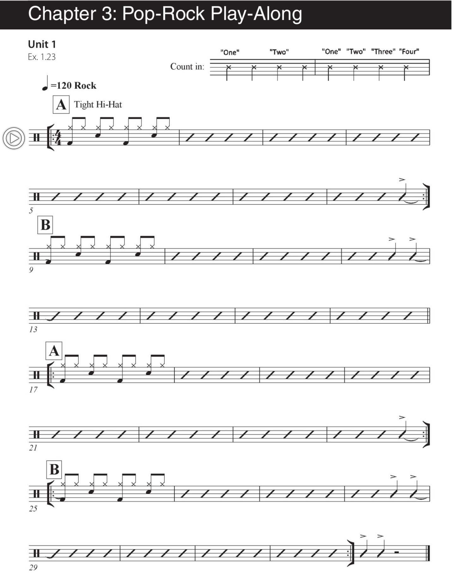

UNIT 01
CHAPTER 3跟著音樂一起練習
Pop-Rock Play-Along

自主練習
ON YOUR OWN
練習建議
- 熟記第一章中的術語。
- 聆聽 Ex. 1.12 與 Ex. 1.13 的 Performance Note Examples。
- 不使用 play-along，每天以節拍器設定 100 與 120 BPM，練習樂譜中的 groove，共二十分鐘。
- 每天跟著 play-along 音軌演奏兩次，共八分鐘。
- 將整份課程內容至少讀兩遍，熟悉其中的術語。
- 在練習室與課堂上錄下自己的演奏，開始培養符合音樂風格的鼓組音色。